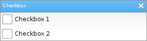

Löve Frames - The Checkbox Object
Return to Index
Information
A standard checkbox
Example Use
local checkbox = loveframes.Create("checkbox")
Event Callbacks
OnChanged - Called every time the object becomes checked or unchecked
- Arguments passed: self [object], checked [boolean]
- Arguments passed: self [object], checked [boolean]
local frame = loveframes.Create("frame")
frame:SetName("Checkbox")
frame:SetHeight(85)
frame:CenterWithinArea(unpack(demo.centerarea))
local checkbox1 = loveframes.Create("checkbox", frame)
checkbox1:SetText("Checkbox 1")
checkbox1:SetPos(5, 30)
local checkbox2 = loveframes.Create("checkbox", frame)
checkbox2:SetText("Checkbox 2")
checkbox2:SetPos(5, 60)

Methods
SetText - Sets the object's text
- Returns 1 value: text [string]
- Returns 1 value: checked [boolean]
- Returns 1 value: font [font]
- Returns 2 values: boxwidth [number], boxheight [number]
- Returns 1 value: boxwidth [number]
- Returns 1 value: boxheight [number]
- Returns 1 value: enabled [bool]
object:SetText(text[string])GetText - Gets the object's text
- Returns 1 value: text [string]
local text = object:GetText()SetChecked - Sets whether the object is checked or not
object:SetChecked(checked[boolean])GetChecked - Gets whether the object is checked or not
- Returns 1 value: checked [boolean]
local checked = object:GetChecked()GetFont - Gets the object's font
- Returns 1 value: font [font]
local font = object:GetFont()GetBoxSize - Gets the object's box size
- Returns 2 values: boxwidth [number], boxheight [number]
local boxwidth, boxheight = checkbox:GetBoxSize()GetBoxWidth - Gets the object's box width
- Returns 1 value: boxwidth [number]
local boxwidth = checkbox:GetBoxWidth()GetBoxHeight - Gets the object's box height
- Returns 1 value: boxheight [number]
local boxheight = checkbox:GetBoxHeight()SetEnabled - Enables or disables the object
object:SetEnabled(enabled[bool])GetEnabled - Gets whether or not the object is enabled
- Returns 1 value: enabled [bool]
local enabled = object:GetEnabled()